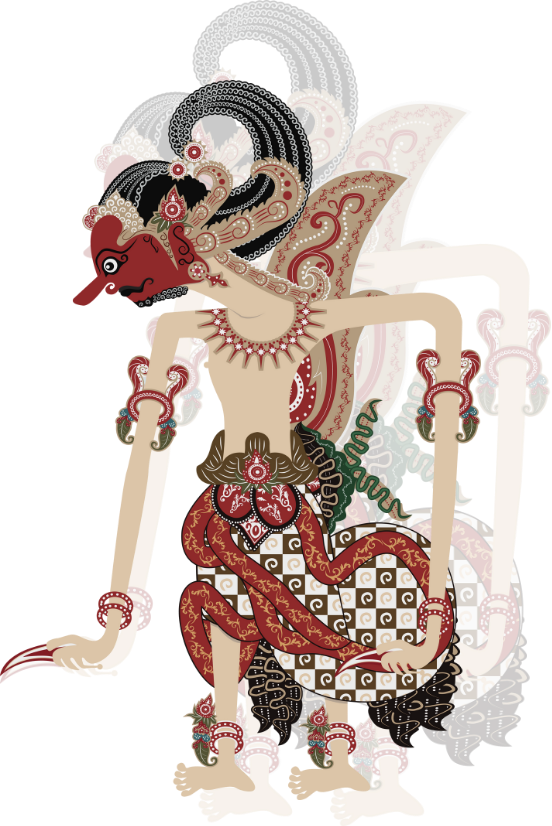

This Is Bima

Profile
Bima, atau dikenal juga sebagai Werkudara, adalah kakak Arjuna yang paling kuat dan perkasa. Di antara Pandawa, dia yang paling berbadan besar dan dikenal punya tenaga super..
Karakter
Kalau Arjuna elegan, Bima lebih ke arah ksatria yang tangguh dan nggak neko-neko. Dia orang yang lurus, apa adanya, dan selalu berani membela yang benar
Sifat
1. Bima itu tipe orang yang rela berkorban buat keluarganya. Nggak peduli seberapa sulit, dia selalu ada buat saudaranya.
2. Tangguh: Nggak ada yang bisa ngalahin kekuatan fisik Bima. Kalau ada yang berani macam-macam, siap-siap aja dihajar.
3. Berani: Bima nggak pernah mundur dalam situasi apa pun, dia adalah ksatria yang selalu berjuang sampai akhir.